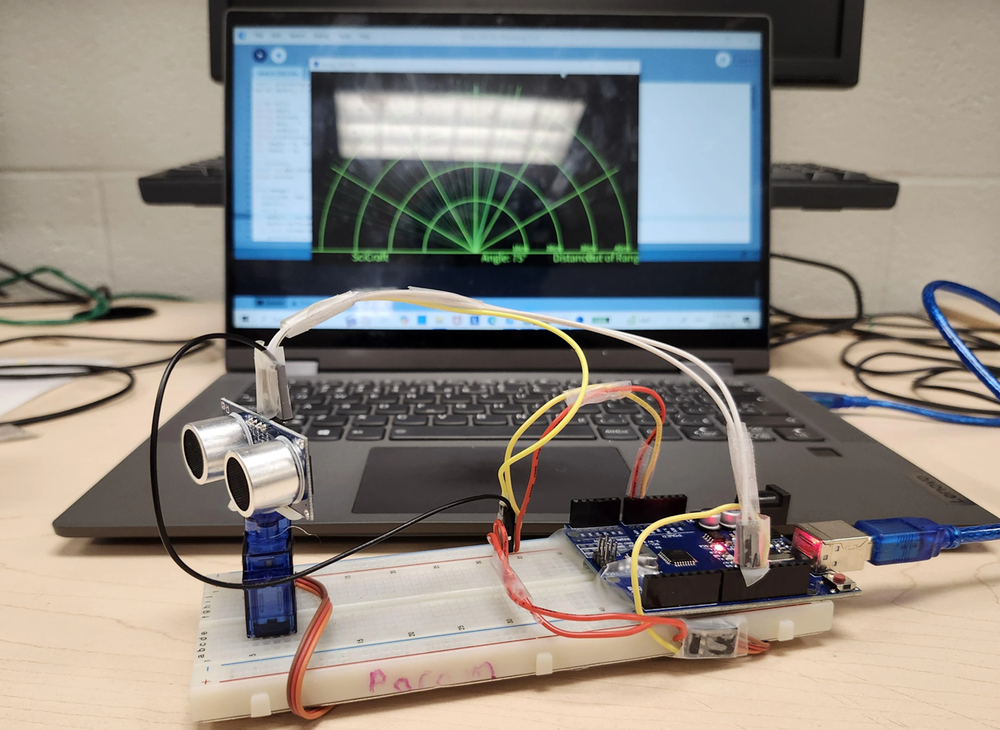

Ultrasonic Radar Visualization
Arduino or similar microcontroller · HC-SR04 ultrasonic sensor · Servo motor · Data visualization

The Problem
Modern electronic systems rely on sensors to collect information about the surrounding environment. However, collecting measurements is only one part of creating a useful system. That information must also be processed and presented in a way that people can easily understand. For my ECE 1100 Individual Discovery Project, I chose to explore this challenge by developing an ultrasonic radar visualization system.
The goal of my project is to create a device capable of detecting nearby objects using an ultrasonic distance sensor mounted on a rotating servo motor. By combining distance measurements with the angle of the sensor, I hope to create a visual representation of the surrounding environment on a computer.
I chose this project because it combines several areas of electrical engineering that interest me, including sensors, microcontrollers, programming, and the interaction between hardware and software. It also provides an opportunity to explore how individual electronic components can work together to form a functional system.
The Design and Development Process
My proposed design uses an HC-SR04 ultrasonic distance sensor, a small servo motor, and an Arduino or similar microcontroller. The ultrasonic sensor measures distance by transmitting sound waves and detecting their reflections from nearby objects. The servo motor allows the sensor to rotate through different angles, creating a scanning motion.
The microcontroller is intended to coordinate these components, record measurements, and transmit the collected information to a laptop. The computer would then process the sensor readings and display them through a radar-style visualization.
During the planning stage, I identified the components and technical resources needed to develop the system. These included microcontroller programming documentation, tutorials for controlling servo motors, and resources explaining how ultrasonic sensors measure distance.
One of the most significant challenges I've encountered is developing the software visualization. Although collecting distance measurements is an important part of the project, translating those measurements into an understandable graphical display introduces additional complexity.
The visualization must associate each distance reading with the sensor's corresponding angle and display that information in a way that accurately represents the scanning process. Developing this connection between physical measurements and a digital interface has become a major focus of my work.
Current Outcome and Next Steps
My Discovery Project is still in progress, and I have not yet completed the full radar visualization system. The primary challenge remains creating software that can effectively display the information recorded by the ultrasonic sensor.
My next steps are to continue developing the visualization, establish a reliable connection between the sensor measurements and the graphical interface, and test how accurately the system represents nearby objects.
Once the visualization is functioning, I hope to evaluate the system by placing objects at different distances and angles and comparing their actual positions with the information displayed on the computer.
Even at this stage, the project has helped me better understand the importance of integrating hardware and software. It has also introduced me to the challenges of converting raw sensor measurements into useful information. As I continue studying electrical engineering, I hope to build on these experiences through more advanced projects involving electronic systems, programming, and embedded technology.